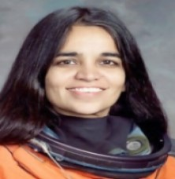
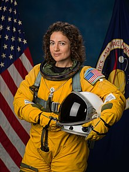
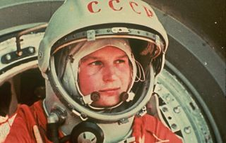

-

Sally Ride
Sally Kristen Ride was an American astronaut and physicist. Born in Los Angeles, she joined NASA in 1978, and in 1983 became the first American woman in space. She was the third woman in space overall, after USSR cosmonauts Valentina Tereshkova and Svetlana Savitskaya.
-

Kalpana Chawla
Kalpana Chawla was an American astronaut, engineer, and the first woman of Indian origin to go to space. She first flew on Space Shuttle Columbia in 1997 as a mission specialist and primary robotic arm operator.
-
Christina koch
Christina Hammock Koch is an American engineer and NASA astronaut of the class of 2013. She received Bachelor of Science degrees in Electrical Engineering and Physics and a Master of Science in Electrical Engineering from North Carolina State University.Koch was a part of ISS Expeditions 59, 60 and 61. She launched on March 14, 2019 from the Baikonur Cosmodrome on a Soyuz spacecraft with NASA Astronaut Nick Hague and Russian Cosmonaut Alexey Ovchinin.
-

Jessica Meir
Jessica Meir was selected in 2018 and has logged 205 days in space during her first spaceflight, Expedition 61 and 62 (Sept. 25, 2019 – April 17, 2020) to the International Space Station (ISS).
-

Valentina Tereshkova
As a young woman, Valentina Tereshkova worked in a textile mill and parachuted as a hobby. She was chosen to be trained as a cosmonaut in the USSR's space program. On June 13, 1963, she became the first woman to travel into space. In just under three days, she orbited the earth 48 times.